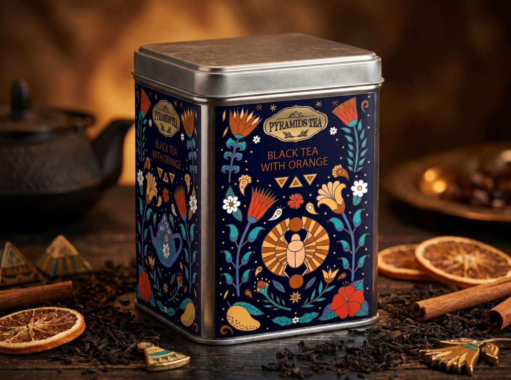
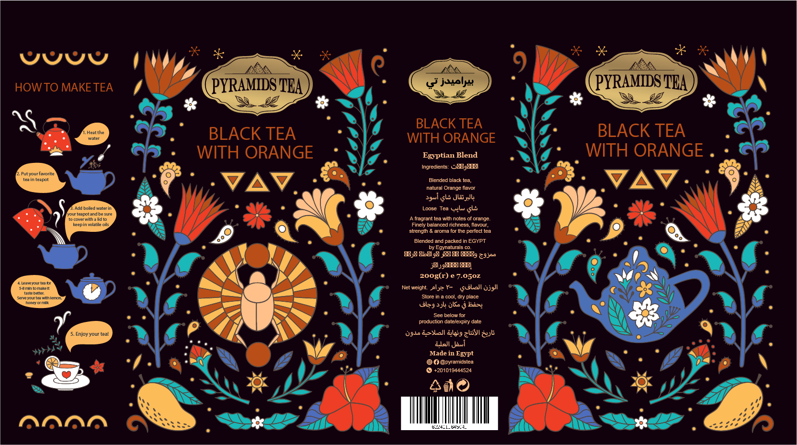
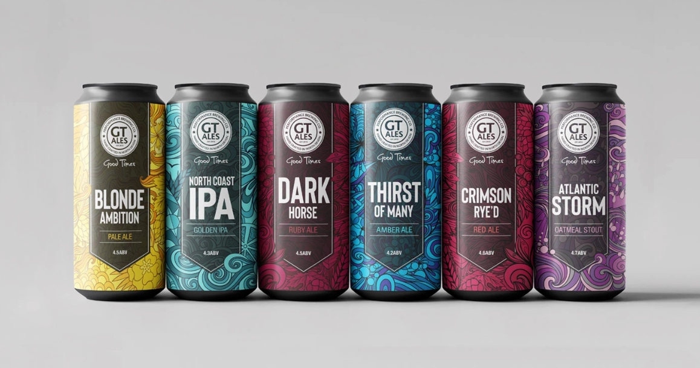
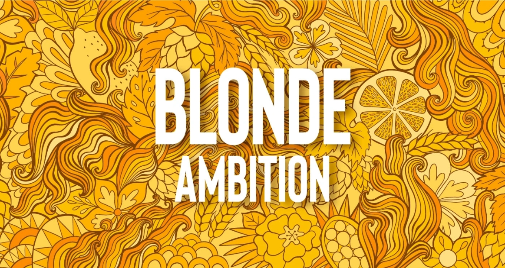
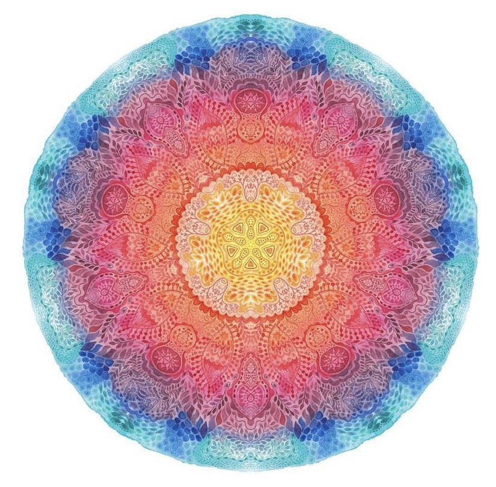
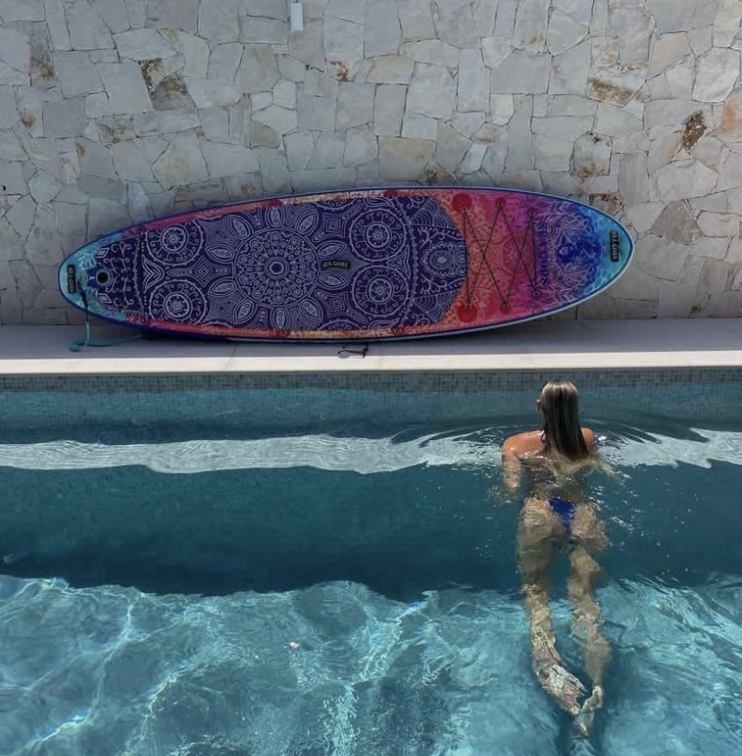

В предыдущей статье я рассказала, как получила приглашение на интервью Expert Vetted и что уже было у меня на тот момент: опыт, отзывы, завершённые заказы, статус Top Rated Plus и портфолио с коммерческими проектами.
В этой статье хочу подробнее разобрать само интервью: как оно проходило, сколько длилось и какие вопросы мне задавали.
Разговор длился около 40 минут. Интервью проходило на английском языке, с моей стороны была включена камера. Со стороны Upwork было два интервьюера, но они были только на аудио.
Это не было похоже на экзамен или техническое собеседование. Скорее это был спокойный профессиональный разговор о моём опыте, проектах, клиентах и том, как я работаю.
Сначала мне рассказали о программе Expert Vetted
В начале звонка интервьюеры объяснили, зачем существует программа Expert Vetted и чем она отличается от других статусов на Upwork.
Смысл был в том, что Upwork хочет выделять специалистов, которых можно рекомендовать более крупным клиентам и компаниям. Поэтому смотрят не только на рейтинг и количество заказов, но и на качество работ, опыт, коммуникацию, уровень клиентов и способность вести проекты профессионально.
Мне объяснили, что Top Rated и Top Rated Plus больше связаны с метриками аккаунта: успешностью проектов, отзывами, заработком и стабильностью профиля.
А Expert Vetted — это уже более экспертная оценка: смотрят, насколько специалист действительно силён в своей области и подходит ли он для работы с клиентами высокого уровня.
Вопрос 1. Расскажите о своём опыте
Один из первых вопросов был общий: меня попросили рассказать о себе, своей специализации и опыте.
Я рассказывала, что работаю как иллюстратор и surface pattern designer: создаю паттерны, орнаменты, иллюстрации, упаковку, принты для разных продуктов и коллекции дизайнов.
Также я говорила о том, что много лет работала со стоками, загружала туда свои иллюстрации и паттерны, а позже стала получать заказы и через Upwork.
Интервьюерам было важно понять не просто «что я рисую», а какой у меня профессиональный путь, с какими задачами я работала и какой коммерческий опыт стоит за портфолио.
Вопрос 2. Какая была моя роль в проектах по упаковке
Дальше мы обсуждали конкретные проекты из портфолио.
Например, они спрашивали про проекты упаковки: делала ли я только иллюстрации или участвовала во всём визуальном решении.
Я рассказала о проекте чайной упаковки, где делала полный цикл визуальной работы: искала форму, создавала иллюстрации, рисовала ингредиенты, собирала дизайн этикетки и адаптировала материалы под арабский язык.
Для меня это был интересный опыт, потому что пришлось работать не только с иллюстрацией, но и с типографикой на арабском языке. Нужно было учитывать, как работает направление письма и как визуально встроить этот текст в дизайн.


Также мы обсуждали проект пивной упаковки. Там базовый дизайн этикетки уже был сделан другим дизайнером, а меня пригласили для создания детализированных фоновых иллюстраций для разных вкусов.
Для каждого варианта клиент давал список объектов и ассоциаций, которые должны были попасть в иллюстрацию. Например, для одного из вкусов нужно было связать образ женских волос с другими элементами композиции.


Интервьюеров интересовало, насколько глубоко я была вовлечена в проект и какую именно часть задачи решала.
Вопрос 3. В каких индустриях я предпочитаю работать
После обсуждения упаковки меня спросили, в каких индустриях я чаще всего работаю и есть ли сферы, которые мне особенно интересны.
В моём портфолио были проекты для упаковки, напитков, детских товаров, текстиля и разных продуктов, поэтому вопрос был логичный.
Я ответила, что не хочу ограничивать себя одной индустрией.
Паттерны и иллюстрации можно применять почти на любой поверхности: на упаковке, ткани, обоях, посуде, товарах для детей, товарах для дома, канцелярии, спортивном инвентаре.
Мне интереснее не конкретная категория продукта, а сама задача: новая поверхность, новый формат, новый способ применить орнамент или иллюстрацию.
Вопрос 4. Был ли у меня необычный проект вне Upwork
Я рассказала о проекте, который пришёл не через Upwork, а через Behance.
Меня пригласили сделать дизайн для SUP-досок для плавания. Это большие доски, на которых плавают стоя.
Для них я создавала орнаментальные композиции в стиле мандал.
Мне нравится такой опыт, потому что это не просто картинка на экране. Дизайн переносится на большой физический объект, у которого есть форма, масштаб и реальное использование.
Этот пример хорошо показывал, что мои паттерны и орнаменты могут работать не только на классической упаковке или текстиле, но и на нестандартных продуктах.


Посмотреть проект в действии: видео SUP-доски Seagods →
Вопрос 5. Насколько я гибкая по ставке
Отдельный блок разговора был про стоимость работы.
На тот момент в моём профиле стояла ставка 100 долларов в час. Интервьюеры спросили, насколько эта ставка актуальна и готова ли я быть гибкой.
Я объяснила, что какое-то время действительно работала по такой ставке, но понимаю, что не каждый клиент готов к такому бюджету.
Я также сказала, что могу рассматривать разные проекты индивидуально. Иногда проект может быть ниже по ставке, но интересен творчески, или даёт возможность сделать что-то нестандартное.
Сейчас я бы добавила важное уточнение: гибкость по ставке не означает, что нужно соглашаться на любой бюджет. Это скорее про умение оценивать проект целиком: клиента, задачу, сроки, интерес, перспективу и ценность для портфолио.
Вопрос 6. Расскажите о крупных брендах в профиле
Интервьюеры обратили внимание, что в профиле были упомянуты крупные компании и известные площадки.
Они попросили подробнее объяснить, откуда этот опыт.
Я рассказала, что около 15 лет работала со стоковой графикой и загрузила на Shutterstock тысячи изображений: паттерны, иллюстрации, орнаменты и графику для коммерческого использования.
Иногда крупные компании покупали расширенные права на использование моих работ через стоковые площадки.
Также я рассказывала о клиентах, которые создавали товары для Amazon и других маркетплейсов. Например, я делала паттерны для детской продукции и разных коммерческих товаров.
Здесь интервьюерам было важно понять, что за названиями в профиле стоит реальный опыт, а не просто красивые слова.
Вопрос 7. Что именно я создаю: паттерны, иллюстрации или что-то ещё
Ещё один важный момент — они уточняли, какие именно работы я делаю.
Я объясняла, что моя основная область — это паттерны и иллюстрации, которые можно применять на продуктах.
Это могут быть повторяющиеся принты, одиночные иллюстрации, декоративные элементы, орнаменты, упаковочные иллюстрации, коллекции дизайнов для разных поверхностей.
Мне кажется, для Expert Vetted важно уметь объяснить свою специализацию простыми словами. Не просто сказать «я дизайнер», а показать, какие задачи ты решаешь для клиента.
Что меня удивило в интервью
Меня удивило, что не было никаких технических вопросов.
Меня не спрашивали, какими инструментами в Illustrator я пользуюсь, как я строю раппорт или какие горячие клавиши знаю.
Не было тестового задания.
Не было ощущения, что меня проверяют как на экзамене.
Главный фокус был на опыте, проектах, клиентах, коммуникации и понимании моей профессиональной роли.
То есть для такого отбора важно не только хорошо рисовать, но и уметь объяснить:
- что именно вы делали в проекте;
- какую задачу клиента решали;
- с какими продуктами и рынками работали;
- почему ваш опыт можно считать коммерческим;
- как вы общаетесь с клиентами.
Что, на мой взгляд, помогло пройти интервью
Я не думаю, что был один решающий фактор.
Скорее сработала совокупность всего, что накопилось к тому моменту:
- много завершённых заказов на Upwork;
- хорошие отзывы клиентов;
- статус Top Rated Plus;
- опыт работы с коммерческими проектами;
- портфолио с понятной специализацией;
- многолетний опыт на стоках;
- умение рассказать о проектах не только как о картинках, а как о решении задач клиента.
Если вы получите приглашение на такое интервью, я бы советовала не пытаться выучить идеальные ответы.
Лучше заранее пройтись по своим сильным проектам и честно ответить себе:
- что я делала в этом проекте;
- почему клиент выбрал меня;
- какую задачу я решила;
- какой был результат;
- что этот проект говорит о моём уровне.
Именно это, как мне кажется, и важно на интервью Expert Vetted.
А если вы только начинаете свой путь на Upwork и хотите понять, с чего вообще начать, — читайте мою статью о первом клиенте.
На вебинаре я подробно разбираю систему поиска клиентов, развития портфолио и роста дохода.